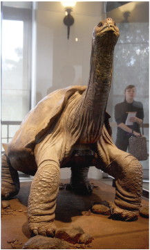

Reflexiono para avanzar
Alumno:
Reflexiono para avanzar
Alumno:
Lee la siguiente entrevista.
Misión: George

Cuerpo disecado del Solitario George. Museo Americano
de Historia Natural
Impresiones de un joven que conoció a George, la última tortuga gigante de Galápagos de su especie.
Esta entrevista fue realizada el 27 de junio de 2012, una vez que se supiera de la muerte de George, el espécimen más famoso de las Galápagos por ser el último miembro de su especie, Geochelone nigra abingdoni. Nuestro entrevistado fue David Sandoval, un joven ingeniero ambiental, quien, en sus tiempos de estudiante de Ciencias Ambientales en la Universidad Central del Ecuador, debió cumplir una pasantía en el Parque Nacional Galápagos (PNG). El trabajo de David fue hacer el seguimiento de las actividades reproductivas de George.
Entrevistadora: ¿En qué consistía tu trabajo de seguimiento a George?
David: George estaba acompañado de tres hembras de tres diferentes subespecies, compatibles genéticamente con la suya, que era la Geochelone abingdoni. Se diría que su reproducción fue uno de los objetivos más importantes del PNG durante los últimos cuarenta años, desde que se recogió a George en el año 1970. El señor Fausto Llerena, quien estuvo a cargo del proyecto, es básicamente el encargado de la reproducción,
Esta entrevista fue realizada el 27 de junio de 2012, una vez que se supiera de la muerte de George, el espécimen más famoso de las Galápagos por ser el último miembro de su especie, Geochelone nigra abingdoni. Nuestro entrevistado fue David Sandoval, un joven ingeniero ambiental, quien, en sus tiempos de estudiante de Ciencias Ambientales en la Universidad Central del Ecuador, debió cumplir una pasantía en el Parque Nacional Galápagos (PNG). El trabajo de David fue hacer el seguimiento de las actividades reproductivas de George.
Entrevistadora: ¿En qué consistía tu trabajo de seguimiento a George?
David: George estaba acompañado de tres hembras de tres diferentes subespecies, compatibles genéticamente con la suya, que era la Geochelone abingdoni. Se diría que su reproducción fue uno de los objetivos más importantes del PNG durante los últimos cuarenta años, desde que se recogió a George en el año 1970. El señor Fausto Llerena, quien estuvo a cargo del proyecto, es básicamente el encargado de la reproducción,
crianza y repoblamiento de tortugas en todo el archipiélago.
Mi trabajo consistía en visitar a George todos los días, con
libreta en mano, y anotar la frecuencia
de sus intentos de apareamiento
con sus compañeras.
Entrevistadora: Cuéntanos algo de tu vivencia con George, ¿cómo era?, ¿cómo lo viste en su hábitat?
David: En los primeros tiempos, cuando yo llegaba en la mañana y lo saludaba, George alzaba el cuello y se quedaba mirándome fijamente, yo diría que súper desafiante; inclusive, algunas veces, cuando me acercaba a ponerle su alimento, su actitud era como si estuviera resguardando su territorio.
Después de un tiempo, ya me reconocía y ya no se sentía incómodo con mi presencia. George era un animalito súper especial.
Entrevistadora: En una nota de prensa se dice que las cabras llevadas a Galápagos fueron las que marcaron el final de la especie. Por favor, explícanos de qué manera ocurrió esta situación.
David: Galápagos es un lugar muy especial. Cualquier proceso de construcción o destrucción del ecosistema, cuyas consecuencias en otros lugares son observables en cientos de años, en el archipiélago,
Entrevistadora: Cuéntanos algo de tu vivencia con George, ¿cómo era?, ¿cómo lo viste en su hábitat?
David: En los primeros tiempos, cuando yo llegaba en la mañana y lo saludaba, George alzaba el cuello y se quedaba mirándome fijamente, yo diría que súper desafiante; inclusive, algunas veces, cuando me acercaba a ponerle su alimento, su actitud era como si estuviera resguardando su territorio.
Después de un tiempo, ya me reconocía y ya no se sentía incómodo con mi presencia. George era un animalito súper especial.
Entrevistadora: En una nota de prensa se dice que las cabras llevadas a Galápagos fueron las que marcaron el final de la especie. Por favor, explícanos de qué manera ocurrió esta situación.
David: Galápagos es un lugar muy especial. Cualquier proceso de construcción o destrucción del ecosistema, cuyas consecuencias en otros lugares son observables en cientos de años, en el archipiélago,
se evidencia ya a los veinte años.
El caso de las cabras es el ejemplo
más gráfico de este fenómeno:
Para poblar el archipiélago y hacer un lugar más cómodo para los colonos, se llevó a las islas ganado como vacas, cabras, caballos entre otros, sin imaginar el daño que harían estos animales a la flora de ese lugar que es la base de la alimentación de las tortugas gigantes, así como de otras especies endémicas de Galápagos. Se dice que las cabras causaron más daño, dada su rápida reproducción y la cantidad de hierba que consumen diariamente, así como el cambio que experimentó el suelo de las islas por la influencia del estiércol del ganado.
Por otro lado, no podemos olvidar que, durante muchos años, los barcos pesqueros que pasaban por las islas se llevaban grandes cantidades de tortugas como alimento; cuando estaban en alta mar, obtenían de ellas carne fresca de gran calidad nutritiva.
Esta actividad realizada a lo largo de muchos años fue otra causa del desaparecimiento de las tortugas gigantes de Galápagos.
Prolipa (2015). Lengua y Literatura 8. Quito: Prolipa. p. 164.
Para poblar el archipiélago y hacer un lugar más cómodo para los colonos, se llevó a las islas ganado como vacas, cabras, caballos entre otros, sin imaginar el daño que harían estos animales a la flora de ese lugar que es la base de la alimentación de las tortugas gigantes, así como de otras especies endémicas de Galápagos. Se dice que las cabras causaron más daño, dada su rápida reproducción y la cantidad de hierba que consumen diariamente, así como el cambio que experimentó el suelo de las islas por la influencia del estiércol del ganado.
Por otro lado, no podemos olvidar que, durante muchos años, los barcos pesqueros que pasaban por las islas se llevaban grandes cantidades de tortugas como alimento; cuando estaban en alta mar, obtenían de ellas carne fresca de gran calidad nutritiva.
Esta actividad realizada a lo largo de muchos años fue otra causa del desaparecimiento de las tortugas gigantes de Galápagos.
Prolipa (2015). Lengua y Literatura 8. Quito: Prolipa. p. 164.
Lectura Literal
¿En qué consistía el trabajo de David Sandoval?>Lectura inferencial
¿Si George hubiera dejado descendencia, ¿esta se hubiera podido reproducir? ¿Por qué?Lectura crítico-valorativa
¿Qué otras especies endémicas pueden estar siendo amenazadas en las islas Galápagos? ¿Qué medidas consideras necesarias para disminuir esta amenaza?